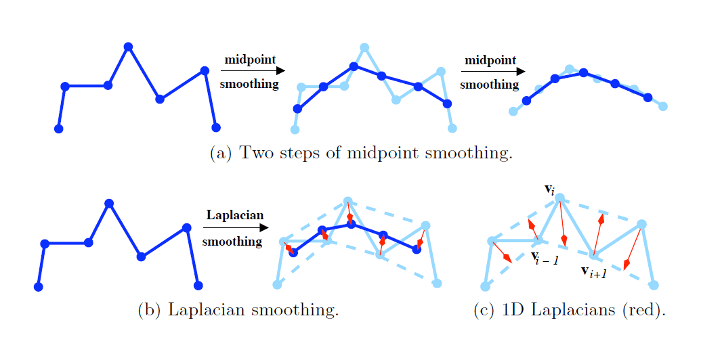
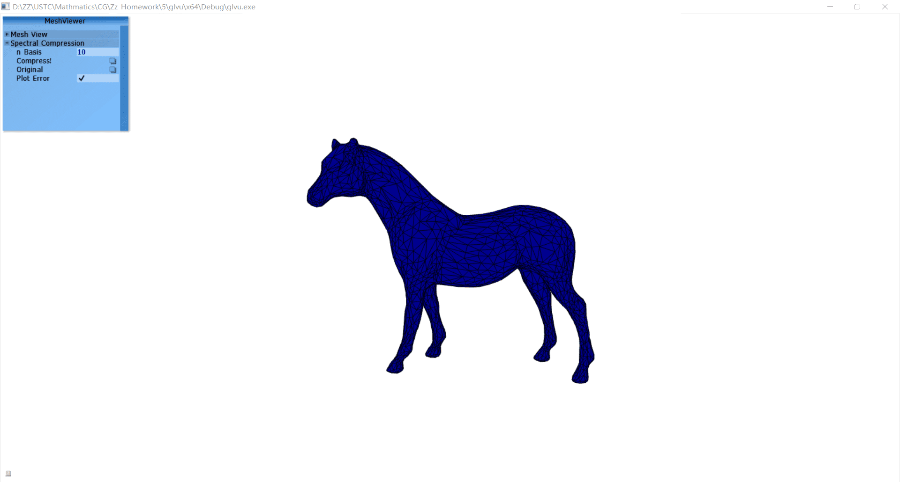
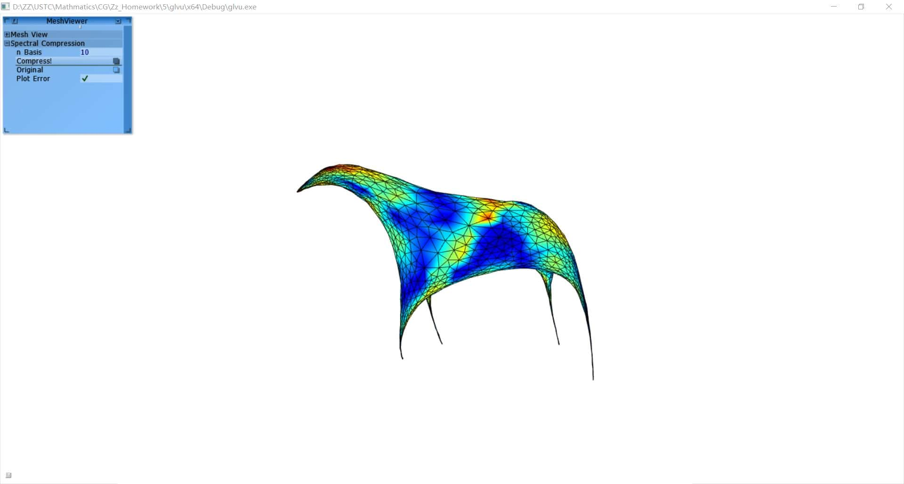
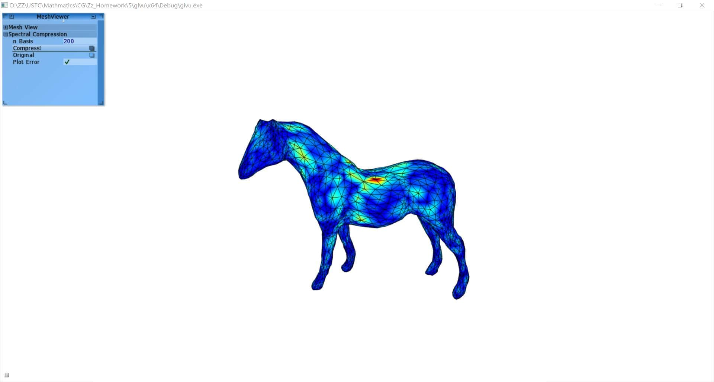

PDF online Laplace矩阵是图论中用到的一种重要矩阵，给定一个有$n$个顶点的图G=(V,E)，其拉普拉斯矩阵被定义为L=I-DA，其中D为图的度矩阵，A为图的邻接矩阵。利用网格Laplace矩阵的谱进行网格的压缩，可以很好的近似原图像。其原理类似于DFT。
$$ L_{i,j} = \begin{cases} 1& \text{, }i = j\\ -1/d_i& \text{, }(i,j)\in E\\ 0& \text{, else} \end{cases} $$ 或者， $$ L_{i,j} = \begin{cases} d_i& \text{, }i = j\\ -1& \text{, }(i,j)\in E\\ 0& \text{, else} \end{cases} $$ Laplacian光滑变换，其变换矩阵为\(S=I-\frac{1}{2}L\)。它的作用大致可由下图表示出来：

对Laplace矩阵进行特征值分解，即谱分解: $$ L = VDV^{-1} $$ 其中，$D$为特征值构成的对角阵，V为对应的特征向量组成的矩阵\(V = {v_1,v_2,...,v_n}\)。
假设，我们输入的信号为X，则基于谱的压缩可以表示为: $$ X' = VV^{T}X $$ 其中，V为对应的前k个特征值最小的特征向量组成的矩阵\(V_{(k)} = {v_1,v_2,...,v_k}\)。我们把k叫作谱系数。
对应于傅里叶变换，前k个特征值最小的特征向量组成的矩阵\(V_{(k)}\)是包含了图G的主要信息，而细节信息都将在\(V^{res}_{(k)} = {v_k,v_k+1,...,v_n}\)中。由此，我们可以计算得误差函数： $$ Loss = |X - X'| = |{V^{res}_{(k)}}^{T}X| $$


